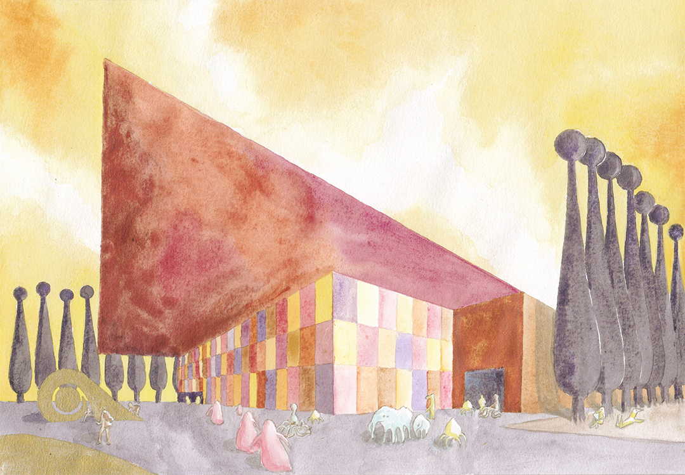
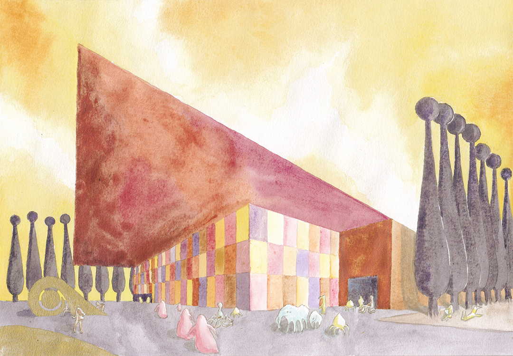

&others, a speculative science / speculative fiction magazine, invites artists and writers to submit!
Now accepting pitches for the January 2020 free online issue. Read the guidelines below and submit your pitch before July 31st, 2019.
Collaborative, experimental work welcome - the only requirement is that it draw from the existing body of scientific knowledge, in any field or discipline. Here is an example of one possible approach

We are especially interested in combinations of analog and digital; speculative and scientific; narrative and visual.

 


Pitches for text-based submissions should be around 100-500 words and should reference at least one peer-reviewed scientific work from any Earth journal. You can reference these existing observations, argue with them, mention them, or go further into depth on any of these phenomena.
Pitches for visual art should be around 100-200 words and cite one visual reference, preferably from a scientific journal.
Along with your pitch, please include a short (1-3 sentences) bio. If you’d like, you may include a cover letter or portfolio, but our editors will be prioritizing quality over qualification.
We are now accepting pitches until 11:59 p.m. anywhere on earth on July 31st, 2019. We will do our best to respond to all pitches by the end of August.
Feel free to submit up to three pitches. If you are submitting work to multiple publications, we ask that you inform us as soon as possible if your work is accepted elsewhere. Previously unpublished work only, please.
To submit your pitch, please send the required materials to tbc.and.others@gmail.com
We look forward to reading your work.
Sincerely,
TBC Editorial Staff
Instigated by Kit Kuksenok in Jan. 2018.
Past and current contributors:
Cora Lee (Character Design; Graphic Design; Lost Mail Art Direction)
Victoria Downing (Watercolor Paintings, 3D Renders, World-Building)
Gaines Hall (Digital Illustrations, Writing, World-Building)
Saga Milena Briggs (Writing, Editing)